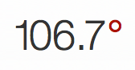
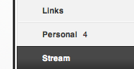
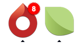
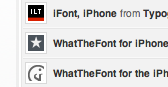
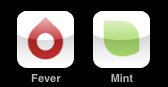
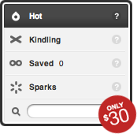

Features

While It’s Hot Fever reads your feeds and picks out the most frequently talked about links from a customizable time period. Unlike traditional aggregators, Fever works better the more feeds you follow.

No Pressure By default Fever hides unread counts to spare you unsavory unread item guilt but sometimes you want to keep an eye on those climbing numbers. Control unread counts on a global, group or feed level.

Stay Hydrated Fever integrates with the popular Mac OS X single-site browser factory Fluid.app. The total number of unread items is updated in the Dock in real-time.Download the Fever icon for Fluid.app.


Iconic If a picture is worth a thousand words a favicon is worth at least the title of the feed. Fever caches and embeds the favicons of all the sites you follow into a single, compressed file so reading is fast and intuitive.

Take It with You Fever includes an optimized interface designed specifically for the iPhone and iPod touch so you can access the current hotness, your saved items and the rest of your unread anywhere you go.- Import/export standard OPML subscription lists
- Blacklist domains to prevent ad spam
- Create and manage groups of feeds
- Support for cron-based refreshing of feeds
- Fahrenheit and Celsius temperatures
- Fever updates itself automatically
- Keyboard shortcuts for mouse-free use
- Fluid and fixed-width layout options
- Search your feeds and their contents
- Unread most recently read items
How Fever Works
To make the most of the Hot list, Fever asks you to make a simple distinction between essential and supplemental feeds. Essential, must-read feeds are Kindling. Supplemental, low signal-to-noise feeds are Sparks. Sparks ignite Kindling raising the temperature of items and links that should not be missed.

Eye Before You Buy Because Fever is a state-based single-user system a live demo isn’t possible. This video demo will highlight some of Fever’s features and walk through the compatibility suite and installation.Purchase
In order to purchase Fever and qualify for support you must first create an account.
Once logged in you will be able to download the Fever Server Compatibility Suite which doubles as an installer.
Upon confirmation of your server’s ability to support Fever return here to purchase or retrieve your Activation Key.
Create an Account
Or Login
In order to retrieve your Activation Key or request support please login.
Please note that the Fever Account Center and your individual Fever installation do not share the same email and password.
Answers
- Is Fever a hosted service?
- No, Fever is a PHP and MySQL application that you run on your own server. Fever has been designed with ease of maintenance in mind and can automatically update itself.
- Is the $30 a one-time fee?
- Fever is licensed like desktop software. Minor updates (eg. 1.0 to 1.1) will be free to licensed users while major upgrades (eg. 1.x to 2.0) will be discounted.
- Does Fever support HTTP authenticated feeds?
- Yes, Fever supports basic HTTP authentication and will prompt you for a username and password for a feed if necessary.
- What are the server requirements for Fever?
- Fever requires a Unix-like server (no Windows/IIS) running Apache, PHP 4.2.3+ (preferably compiled with mbstring and GD with PNG support) and MySQL 3.23+.
- What are the browser requirements for Fever?
- Fever requires a WebKit- or Gecko-based browser including Safari 3+, Firefox 3+ and Safari on iOS. Webkit on Android while reported to work is not officially supported.
- How can I help you better help me?
- Be sure to mention your browser and OS, and versions for both, as well as your Fever url. If a particular feed is causing problems, please include a link to the feed.
Contact
Fever is designed, developed and supported by a single individual. Typical response time is currently 5 or more business days.